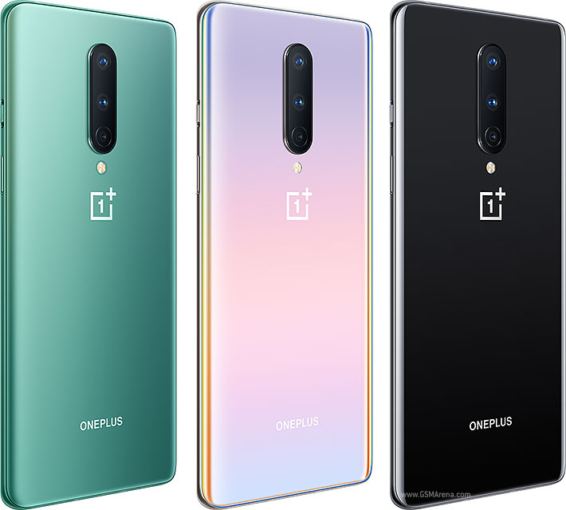

Display
Type Fluid AMOLED, 120Hz, HDR10+. Size 6.55 inches, 103.6 cm2 (~87.0% screen-to-body ratio). Resolution 1080 x 2400 pixels, 20:9 ratio (~402 ppi density). Protection Corning Gorilla Glass 5. Always-on display.
Display
Type Fluid AMOLED, 120Hz, HDR10+. Size 6.55 inches, 103.6 cm2 (~87.0% screen-to-body ratio). Resolution 1080 x 2400 pixels, 20:9 ratio (~402 ppi density). Protection Corning Gorilla Glass 5. Always-on display.

Display
Type Fluid AMOLED, 90Hz, HDR10+. Size 6.67 inches, 108.8 cm2 (~88.1% screen-to-body ratio). Resolution 1440 x 3120 pixels, 19.5:9 ratio (~516 ppi density). Protection Corning Gorilla Glass 6.

Body
Dimensions 160.2 x 72.9 x 8 mm (6.31 x 2.87 x 0.31 in). Weight 180 g (6.35 oz). Build Glass front (Gorilla Glass 5), glass back (Gorilla Glass 5), aluminum frame. SIM Dual SIM (Nano-SIM, dual stand-by).

Camera
Quad 48 MP, f/1.8, 26mm (wide), 1/2.0", 0.8µm, PDAF, OIS. 8 MP, f/2.3, 119˚ (ultrawide). 5 MP, f/2.4, (depth). 2 MP, f/2.4, (macro). Features Dual-LED flash, HDR, panorama. Video 4K@30fps, 1080p@30/60/240fps, gyro-EIS.

Camera
Type Li-Po 4510 mAh, non-removable. Charging Fast charging 30W, 50% in 23 min (advertised). Fast wireless charging 30W, 50% in 30 min (advertised). Reverse wireless charging 3W.
This is the demo for 2nd branch.